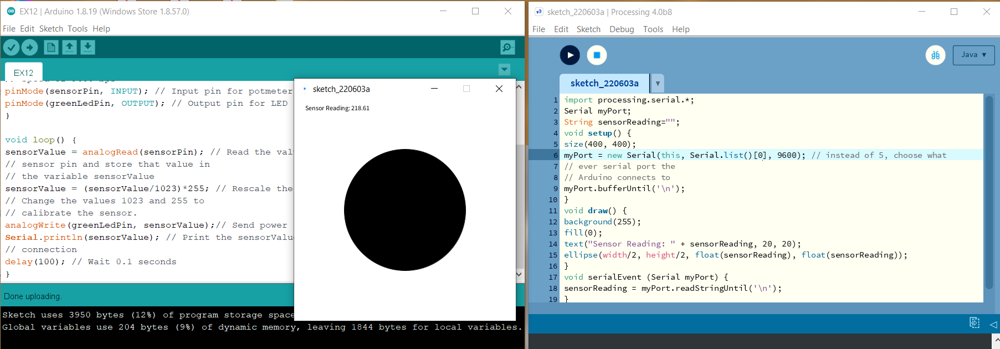

In this exercise, we get the taste of how to set up two LED lights. Afterwards, i tried to make both green and yellow lights blink at the same time. The code for this exercise is very straight forward; where you put both the voltage level of green and yellow lights the same. They should be HIGH or LOW at the same time.
Not just lights blinking at the same time, we also tried how to do one fade in and one fade out. I struggled with the code for a while, but i realized it can be done just simply by one LED using brightness (255) to minus the sensor value.
This exercise is similar to the previous one, but the difference is that we added a potmeter as the medium to change the value. With potentiometer, it gives a range from 0 to 1023, meanwhile brightness is between 0 to 255. Therefore, we also learned how to use map() function so that the sensor value can be scaled correspondingly.
Beside potmeter, we tried to use LDR sensor in this exercise to control the light. The value from LDR is between the range of 0 to 1023. But in reality, the range we got is much smaller. Therefore, we need to check the sensor value to extract the range that the sensor has under the lighting condition we were at. For me it was between 582 to 875, thus i set the range of 600 to 800 in my code.
.png)
In the beginning, i didn't know the frequency range of a siren sound, or how big or small the range should be. Therefore I tried to experiment with different range. In the first video, you can hear that the frequency range is too big, whereas in practice, it should sound shorter that would give a more emergent feeling. The next video is my improved version.
In this exercise, we used an Ultrasonic Proximity Sensor to measure distance. Although it is to measure distance, it is not like using a camera to capture or measure the distance. Instead, it transmits a pulse of ultrasonic sound and then listen for the echo. In this situation, Arduino acts as the one to send a signal to the sensor to initate the action and read the measured duration from the sensor. In the following video, it shows that the yellow LED will start blinking when something is within 50 cm from the sensor.
Arduino can actually work together with other software by creating a serial connection. In this exercise, we tried to connect Arduino and processing together by using Arduino as an input device for our computer. By doing so, we had to first connect them to our own serial port. At the same time, I reused the set up from exercise 8 with LDR sensor and drew a circle on processing. In the video, you can see that the size of the circle will be changed based on the sensor value.
The other way round, Processing can also send data to Arduino. In this experiment, i used key pressed as an input, where if i pressed "a" or "d", Processing itself will have shapes appear and rotate every time you pressed the key. In addition, each keypress will send a different signal to Arduino to create a sound.
Button is being used in this exercise as a sensor. The LED will turn off while the button is pressed.
In this exercise, we used servomotor, which is a type of motor that can turn to a precise position. After learning how it works with Arduino, I tried to make a random move for the motor. I wanted to make the rhythm like the beat that cheering team would make but apparently, it doesn't go exactly as it should be :p But after all it is still very interesting to get to know about this motor.
As you can see, we experimented with different sensors along the workshop. In this exervise, we get to actually make our own sensor. By doing so, we have to first choose an input that are conductive, such as aluminium foil, coins, graphite materials, or even our finger! Eventually, i used my own house key as the medium. When the wire touches the key, the light will turn on.